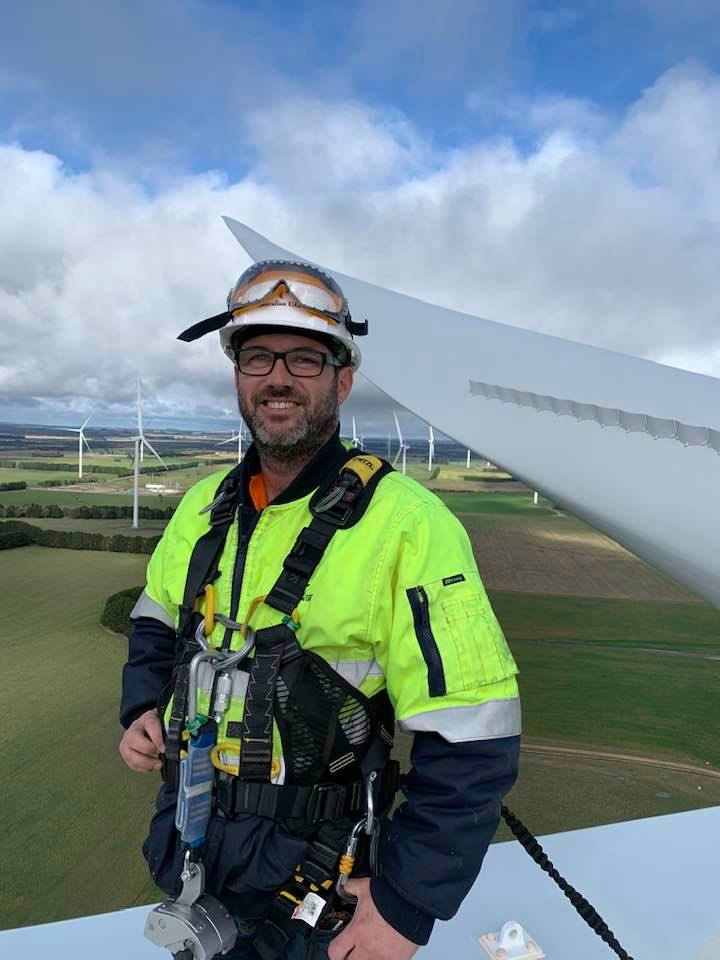
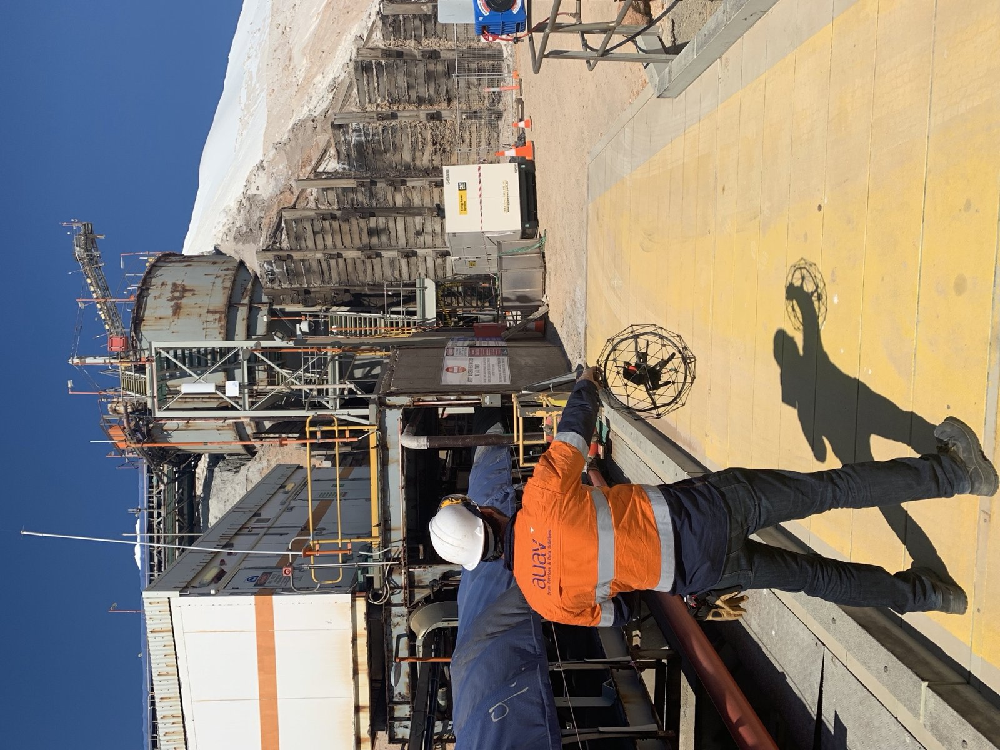
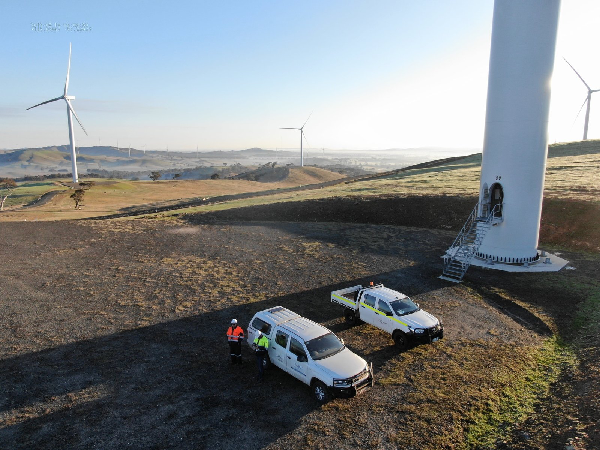
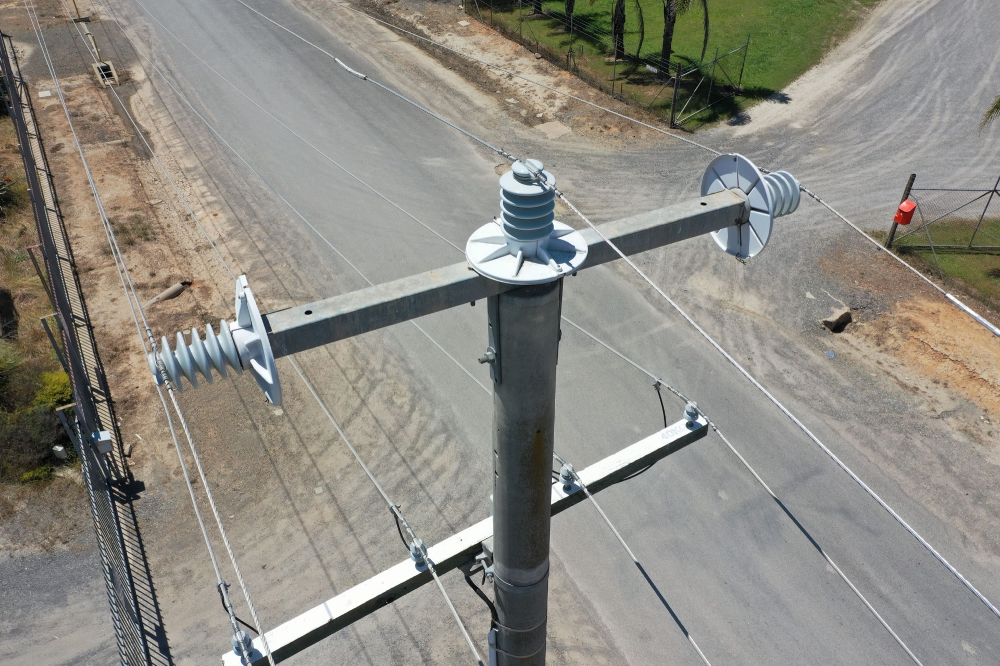

Bridging Precision and Visual Intelligence.
My career began in Multimedia and Graphic Design, a foundation that taught me how to distill complex information into intuitive, high-impact visuals. Over the last 13 years, I have pivoted this 'visual-first' mindset into the aerospace sector.
I don't just see drones as hardware; I see them as data-acquisition solutions. Whether it's architecting a Many-to-Many GCS or navigating high-voltage networks in GPS-denied environments, my goal is to bridge the gap between raw engineering and actionable commercial intelligence using advanced IMU, LiDAR, and Multispectral sensor arrays.

The Mission
"I specialize in scaling autonomous systems within high-stakes, regulated environments. My work ensures that when a Tier-1 client like BHP or Woodside needs data, the delivery is safe, BARS-compliant, and technically flawless."
AUAV onSite: "Drone in a Box"
Led the CASA certification, safety assessment, operational testing, and field deployment of onSite, a sophisticated service module for the DJI Dock 3. Developed the full operational workflow for remote and offshore environments, leveraging its redundant power architecture (PV, Battery, Generator) and failover data array (5G LTE, Satellite, Ethernet).
Impact: Successfully demonstrated and secured CASA acceptance for ROB BVLOS operations in November 2025, enabling fully autonomous remote deployments globally.


Mining & Resource Operations
Managed BARS-compliant data delivery for Tier-1 sites. Optimized survey workflows for volume reporting and complex subsidence monitoring across remote assets.
Oil, Gas & Energy Networks
Delivered high-fidelity 3D digital twins and critical stack inspections. Integrated thermal and RGB sensor data into actionable asset-health reports for global energy leaders.


Transmission & Utility Infrastructure
Spearheaded the deployment of the Insite SaaS platform for high-voltage network inspections. Provided utility managers with a centralized source of truth for transmission health.
SafeSky Systems
Chief Remote Pilot & Solutions ArchitectLeading the development of Many-to-Many GCS solutions. Specialized in CFD airframe optimization and the integration of custom flight-stack firmware for autonomous clusters.
AUAV
Chief Remote Pilot // Project Lead: onSite // Operations ManagerLed the CASA certification pathway, safety assessments, and operational deployment of the onSite Drone-in-a-Box solution. Developed end-to-end workflows and managed the regulatory pathway to CASA ROB BVLOS approval.
National Drones
Solutions Consultant (Sales & Marketing)Technical consultant for marketing and sales agencies. Translated drone data capabilities into commercial visual assets.
AUAV
Senior R&D & Training SpecialistPioneered fixed-wing solutions and custom NIR MultiSpec payloads. Developed internal web-apps for GIS analysis.
Ascet Interactive
Art Director & Web DevelopmentThe foundation of my career. Led visual strategy and web development for major regional projects.
Flight & Control
- MR, VTOL & Fixed-Wing (to 25kg)
- GPS-Denied & Confined Space Ops
- Many-to-Many GCS Architecture
- Ardupilot, PX4 & DJI Ecosystems
Software & Integration
- SaaS Platform Deployment (Insite)
- Python, Node.js, SQL
- Flutter & C++ Development
- API & Sensor Integration
Visual & Sensor Intelligence
- LiDAR, Multispectral & IMU Sensors
- 3D Digital Twin Workflows
- Pix4D / RealityCapture
- QGIS / ESRI / Global Mapper